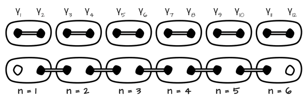

The signs and row positions depend on the choice of convention. Here we used and the ordering |00⟩ |01⟩ |10⟩ |11⟩, but other forms can also be found in the literature.
Interactive simulation for understanding braiding as the basis for topological quantum computing
Majorana fermions (for our purposes) are quasiparticles at the edges of a Kitaev chain in the topological phase. These particles are non-abelian anyons, meaning they have the property that their exchange in space has a non-trivial effect on the wave function of the system. Above is an interactive simulation that shows the effect of exchanging the selected Majoranas using T-junctions and counter-clockwise braiding, and its effect in matrix form as an operator on a two-qubit system.
Phases of the Kitaev Chain
More on the properties of the Kitaev chain for applications in topological quantum computing
The swap matrices are unitary matrices of size 4x4. The swap matrices for nearest neighbors in our case look like:
Other swaps are achieved by composing multiple such swaps. Thus, any swap of non-neighboring Majoranas can be achieved by sequential swaps of neighbors, and by combining such swaps, we obtain the desired operator.
The signs and row positions depend on the choice of convention. Here we used and the ordering |00⟩ |01⟩ |10⟩ |11⟩, but other forms can also be found in the literature.
In our simulation, there are 4 Majoranas, which we interpret as the ends of two Kitaev chains,
so we have a system of 2 qubits. The basic states of the system will be described using the occupancy of a specific
fermion location ( and ).
So:
[1] https://topocondmat.org/w2_majorana/braiding.html
[2] D. Ivanov Non-abelian statistics of half-quantum vortices in p-wave superconductors
[3] C. Nayak, et al., Non-Abelian Anyons and Topological Quantum Computation
[4] J. Alicea, New directions in the pursuit of Majorana fermions in solid state systems
[5] L. Kauffmana, S. Lomonaco, Braiding With Majorana Fermions
[6] M. Freedman, A. Kitaev, et al., Topological Quantum Computation